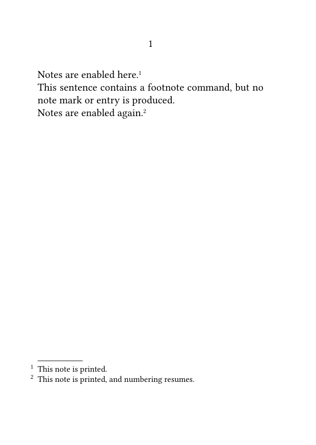
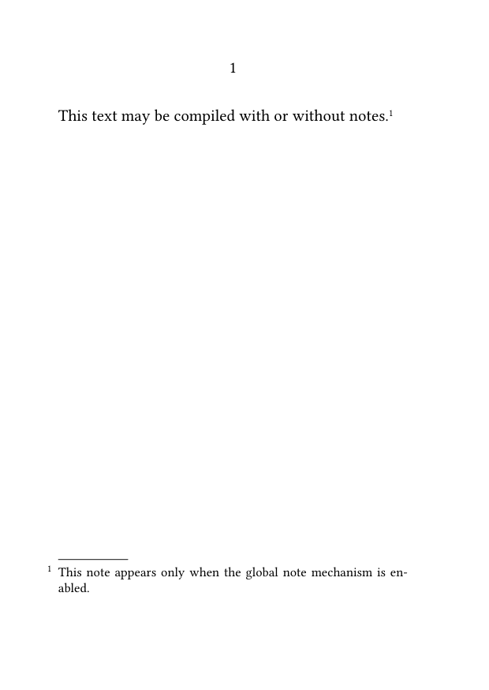
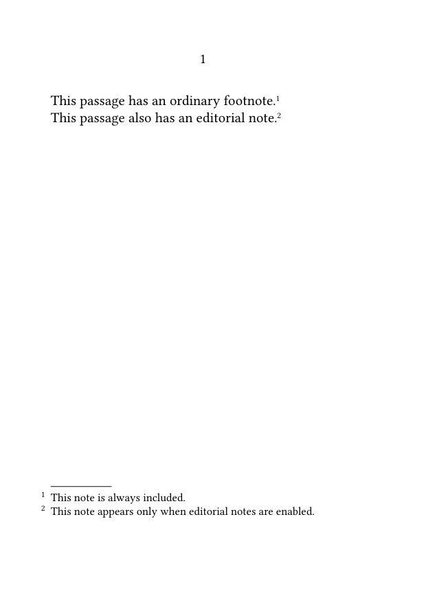
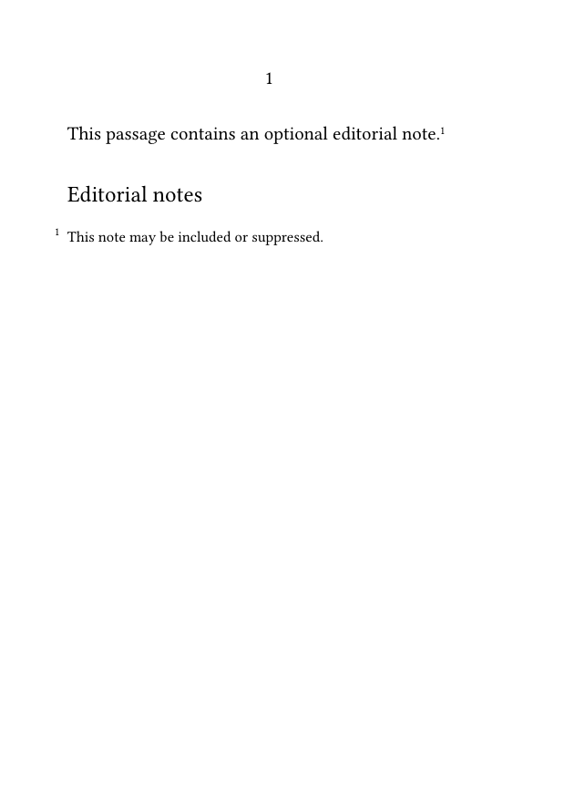
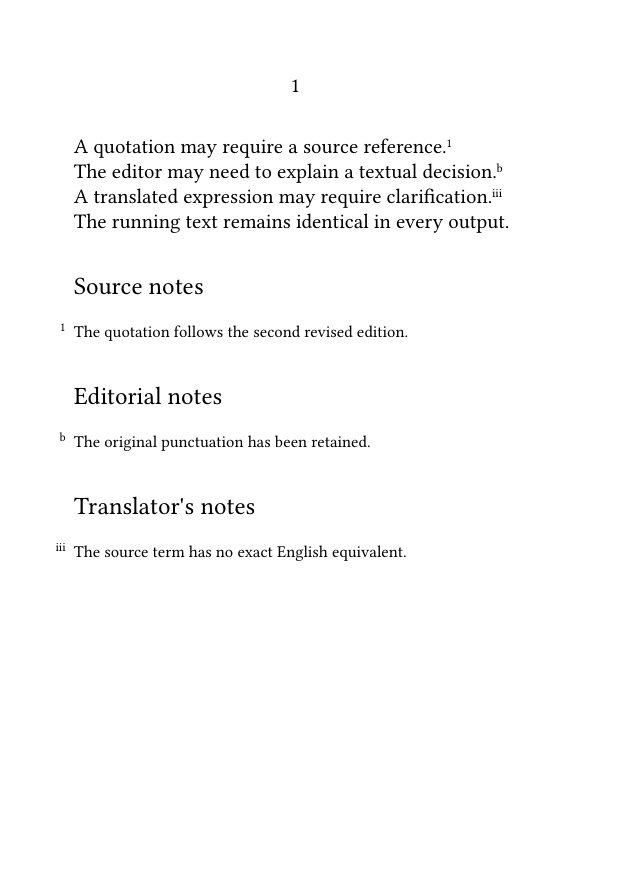

Footnotes in ConTeXt · Overview · Tutorial · How-to guides · Producing annotated and unannotated versions · Reference · Explanation · Glossary
🚧 Under construction — This guide is currently being revised. Please do not modify its source code while this banner remains in place.
Selective output and publication profiles · Previous: Using local notes in tables, floats, and boxes · How-to guides overview · Next: Creating interactive footnotes
Contents
- 1 1. Goal
- 2 2. Distinguish postponing notes from suppressing them
- 3 3. Disable all notes temporarily
- 4 4. Produce a document-wide version without notes
- 5 5. Suppress one note series while keeping another
- 6 6. Select several editorial layers independently
- 7 7. Keep the source semantically readable
- 8 8. Preserve punctuation and spacing
- 9 9. Combine selection with postponed placement
- 10 10. Suppress empty note headings
- 11 11. Define named output profiles
- 12 12. Compare the available methods
-
13
13. Common mistakes
- 13.1 13.1. Confusing postponed notes with suppressed notes
- 13.2 13.2. Using the global switch for one series only
- 13.3 13.3. Leaving an empty heading or placement block
- 13.4 13.4. Forgetting to test the unannotated output
- 13.5 13.5. Repeating low-level conditionals throughout the source
- 13.6 13.6. Letting profile settings contradict one another
- 13.7 13.7. Reusing the note-series command as a wrapper name
- 14 14. Complete example
- 15 15. What this guide has established
- 16 16. Next steps
1. Goal
Produce several versions of the same document while keeping one common source.
For example, the same source may generate:
- a fully annotated scholarly edition;
- a reading edition without notes;
- a version containing only translator's notes;
- a version containing bibliographical notes but not editorial comments;
- a draft in which all notes are temporarily disabled.
This guide distinguishes three operations:
- postponing the placement of notes;
- disabling all notes;
- conditionally including selected note series.
Result
The running text remains unchanged while the visible note layers vary from one output profile to another.
2. Distinguish postponing notes from suppressing them
Postponing a note changes where its entry is printed. It does not remove the logical note from the document.
The setting:
\setupnote [footnote] [location=text]
stores footnote entries until they are placed explicitly with:
\placefootnotes
The setting:
\setupnote [footnote] [location=none]
disables ordinary automatic placement, but the notes remain registered and may be placed by another mechanism.
| Setting | Effect | Typical use |
|---|---|---|
location=text
|
Entries remain pending until an explicit placement command is used | notes placed at the end of a section or chapter |
location=none
|
Ordinary automatic placement is disabled | custom placement mechanisms |
Postponed is not omitted
A postponed note remains part of the document model. Its entry is registered and its counter advances.
For explicit postponed placement, see:
3. Disable all notes temporarily
ConTeXt provides a global switch for the note mechanism:
\notesenabledfalse
Enable notes again with:
\notesenabledtrue
3.1. MWE: disable and re-enable all notes
-
\setuppapersize[A6] \setupbodyfont [libertinus,10pt] \starttext Notes are enabled here.\footnote {This note is printed.} \notesenabledfalse This sentence contains a footnote command,\footnote {This note is ignored.} but no note mark or entry is produced. \notesenabledtrue Notes are enabled again.\footnote {This note is printed, and numbering resumes.} \stoptext
-

While notes are disabled:
- note commands are ignored;
- no note mark is printed;
- no note entry is created;
- the note counter does not advance.
When notes are enabled again, numbering resumes from its previous value.
Global means global
The switch affects the note mechanism as a whole.
Do not use it when only one editorial category should be omitted.
4. Produce a document-wide version without notes
A conditional can select between a fully annotated output and a document-wide version without notes.
4.1. MWE: one global note switch
-
\setuppapersize[A6] \setupbodyfont [libertinus,10pt] \newconditional\showallnotes \settrue\showallnotes \ifconditional\showallnotes \notesenabledtrue \else \notesenabledfalse \fi \starttext This text may be compiled with or without notes.\footnote {This note appears only when the global note mechanism is enabled.} \stoptext
-

To produce the unannotated version, replace:
\settrue\showallnotes
with:
\setfalse\showallnotes
One source, two outputs
The conditional changes the publication policy without requiring changes to the running text.
Use this method only when every note series should be enabled or disabled together.
5. Suppress one note series while keeping another
When a document contains several note series, the global note switch is too broad.
Define a semantic wrapper around the series that may be omitted.
5.1. MWE: optional editorial notes
-
\setuppapersize[A6] \setupbodyfont [libertinus,10pt] \definenote [EdNote] [footnote] \newconditional\showeditorialnotes \settrue\showeditorialnotes \define[1]\EditorialNote {\ifconditional\showeditorialnotes \EdNote{#1} \fi} \starttext This passage has an ordinary footnote.\footnote {This note is always included.} This passage also has an editorial note.\EditorialNote {This note appears only when editorial notes are enabled.} \stoptext
-

To suppress only the editorial notes, replace:
\settrue\showeditorialnotes
with:
\setfalse\showeditorialnotes
The predefined footnote series remains active.
Use semantic wrapper commands
A command such as \EditorialNote expresses the editorial role of the note and makes output selection easier to maintain.
For the definition of custom series, see:
6. Select several editorial layers independently
The same method can control several note categories independently.
First define one conditional for each editorial layer:
\newconditional\showsourcenotes \newconditional\showeditorialnotes \newconditional\showtranslationnotes
Then define one semantic wrapper for each series:
\define[1]\SourceReference
{\ifconditional\showsourcenotes
\SourceNote{#1}
\fi}
\define[1]\EditorialNote
{\ifconditional\showeditorialnotes
\EdNote{#1}
\fi}
\define[1]\TranslatorNote
{\ifconditional\showtranslationnotes
\TradNote{#1}
\fi}
A scholarly edition might use:
\settrue\showsourcenotes \settrue\showeditorialnotes \settrue\showtranslationnotes
A reading edition might use:
\setfalse\showsourcenotes \setfalse\showeditorialnotes \settrue\showtranslationnotes
Independent editorial layers
Each conditional controls one semantic category without changing the others.
Choose wrapper names that do not duplicate the commands created by \definenote.
For example, if \definenote[SourceNote][footnote] creates \SourceNote, use a different wrapper name such as \SourceReference.
7. Keep the source semantically readable
Prefer:
\EditorialNote
{The wording follows the first edition.}
to a low-level conditional repeated throughout the running text:
\ifconditional\showeditorialnotes
\EdNote
{The wording follows the first edition.}
\fi
The semantic wrapper:
- keeps the source concise;
- displays the editorial function directly;
- centralizes the output policy;
- makes later changes easier;
- helps collaborators understand the source.
This is especially useful when the same series occurs hundreds of times or when several output profiles are produced regularly.
Keep policy out of the running text
The body of the document should identify the type of annotation.
The preamble or project environment should decide whether that layer is visible.
8. Preserve punctuation and spacing
Place a conditional note command immediately after the word or punctuation to which its mark belongs:
This passage requires an editorial note.\EditorialNote
{Editorial comment.}
When the note layer is disabled, the wrapper produces no mark or entry.
Test both the annotated and unannotated outputs to ensure that:
- no unwanted space remains;
- punctuation remains correct;
- no empty line or paragraph is introduced;
- sentence flow remains natural.
Test every output state
A construction may look correct when notes are visible but reveal spacing or punctuation problems when a note command produces nothing.
Do not add source-line suppression characters automatically. Use them only when a specific line break would otherwise create unwanted space.
9. Combine selection with postponed placement
A conditionally selected note series may also use postponed placement.
9.1. MWE: optional postponed editorial notes
-
\setuppapersize[A6] \setupbodyfont [libertinus,10pt] \definenote [EdNote] [footnote] \newconditional\showeditorialnotes \settrue\showeditorialnotes \define[1]\EditorialNote {\ifconditional\showeditorialnotes \EdNote{#1} \fi} \setupnote [EdNote] [location=text] \starttext This passage contains an optional editorial note.\EditorialNote {This note may be included or suppressed.} \subject{Editorial notes} \placenotes[EdNote] \stoptext
-

When \showeditorialnotes is false:
- no editorial mark is printed;
- no editorial note text is registered;
- no editorial entry is created;
- the editorial counter does not advance.
The heading remains visible, however, unless it is also made conditional.
10. Suppress empty note headings
When an entire note layer is omitted, suppress its heading and placement block together with its individual notes.
10.1. MWE: conditional heading and placement block
-
\setuppapersize[A6] \setupbodyfont [libertinus,10pt] \definenote [EdNote] [footnote] \newconditional\showeditorialnotes \settrue\showeditorialnotes \define[1]\EditorialNote {\ifconditional\showeditorialnotes \EdNote{#1} \fi} \setupnote [EdNote] [location=text] \starttext This passage contains an optional editorial note.\EditorialNote {This note may be included or suppressed.} \ifconditional\showeditorialnotes \subject{Editorial notes} \placenotes[EdNote] \fi \stoptext
-

Control both content and presentation
Suppress the heading, placement command, and associated spacing whenever the complete note layer is omitted.
A profile switch indicates whether a category is enabled. It does not necessarily prove that the document contains at least one note of that category.
For projects where enabled series may remain unused, an additional counter or content test may be needed to suppress empty headings.
11. Define named output profiles
For larger projects, group related conditional settings into named setups.
\startsetups[edition:scholarly] \settrue\showsourcenotes \settrue\showeditorialnotes \settrue\showtranslationnotes \stopsetups \startsetups[edition:reading] \setfalse\showsourcenotes \setfalse\showeditorialnotes \settrue\showtranslationnotes \stopsetups
Activate one profile with:
\setups{edition:scholarly}
or:
\setups{edition:reading}
Named profiles:
- keep all output choices in one place;
- prevent contradictory settings from being scattered through the source;
- make repeated publication workflows easier;
- provide readable names for recurring editions.
Profiles belong with project configuration
In a multi-file project, named output profiles are usually best kept in a common environment rather than repeated in individual chapters.
12. Compare the available methods
| Method | Effect | Best use |
|---|---|---|
location=text
|
Note entries remain pending until explicitly placed | moving notes to the end of a structural unit |
location=none
|
Ordinary automatic placement is disabled | custom placement mechanisms |
\notesenabledfalse
|
All note commands are ignored | an output without any notes |
| Conditional semantic wrapper | One selected note category is included or omitted | editorially selective outputs |
| Named output profile | Several note layers are configured together | large projects with recurring editions |
These methods may be combined, but they solve different problems.
13. Common mistakes
13.1. Confusing postponed notes with suppressed notes
A note configured with location=text still exists and must be placed.
13.2. Using the global switch for one series only
The command \notesenabledfalse affects the note mechanism as a whole.
Use a semantic wrapper when only one selected series should be omitted.
13.3. Leaving an empty heading or placement block
When a layer is omitted, suppress its heading and placement command as well as its notes.
13.4. Forgetting to test the unannotated output
Spacing, punctuation, and paragraph flow may behave differently when note wrappers produce nothing.
13.5. Repeating low-level conditionals throughout the source
Define one semantic wrapper for each layer and use it consistently.
13.6. Letting profile settings contradict one another
Keep every recurring output policy in one clearly identified setup.
Activate only one complete profile for a given compilation.
13.7. Reusing the note-series command as a wrapper name
If:
\definenote [SourceNote] [footnote]
creates \SourceNote, do not redefine \SourceNote as a conditional wrapper.
Use a distinct name such as:
\SourceReference
Most frequent design error
The notes are suppressed, but their headings, spacing, or placement commands remain visible.
Treat every note layer as a complete editorial unit.
14. Complete example
The following MWE combines:
- three independent note series;
- one conditional for each editorial layer;
- a scholarly output profile;
- a reading output profile;
- semantic wrapper commands;
- postponed placement;
- conditional headings and placement blocks;
- unchanged running text.
14.1. MWE: two output profiles from one source
-
\setuppapersize[A6] \setupbodyfont [libertinus,10pt] \definenote [SourceNote] [footnote] \definenote [EdNote] [footnote] \definenote [TradNote] [footnote] \setupnote [SourceNote] [location=text, bodyfont=small] \setupnote [EdNote] [location=text, bodyfont=small] \setupnote [TradNote] [location=text, bodyfont=small] \setupnotation [SourceNote] [numberconversion=numbers] \setupnotation [EdNote] [numberconversion=characters] \setupnotation [TradNote] [numberconversion=romannumerals] \newconditional\showsourcenotes \newconditional\showeditorialnotes \newconditional\showtranslationnotes \startsetups[edition:scholarly] \settrue\showsourcenotes \settrue\showeditorialnotes \settrue\showtranslationnotes \stopsetups \startsetups[edition:reading] \setfalse\showsourcenotes \setfalse\showeditorialnotes \settrue\showtranslationnotes \stopsetups \define[1]\SourceReference {\ifconditional\showsourcenotes \SourceNote{#1} \fi} \define[1]\EditorialNote {\ifconditional\showeditorialnotes \EdNote{#1} \fi} \define[1]\TranslatorNote {\ifconditional\showtranslationnotes \TradNote{#1} \fi} % Choose one output profile: \setups{edition:scholarly} % \setups{edition:reading} \starttext A quotation may require a source reference.\SourceReference {The quotation follows the second revised edition.} The editor may need to explain a textual decision.\EditorialNote {The original punctuation has been retained.} A translated expression may require clarification.\TranslatorNote {The source term has no exact English equivalent.} The running text remains identical in every output. \ifconditional\showsourcenotes \subject{Source notes} \placenotes[SourceNote] \fi \ifconditional\showeditorialnotes \subject{Editorial notes} \placenotes[EdNote] \fi \ifconditional\showtranslationnotes \subject{Translator's notes} \placenotes[TradNote] \fi \stoptext
-

Compile the example twice:
-
first with
\setups{edition:scholarly}; -
then with
\setups{edition:reading}.
Check that:
- the scholarly version contains all three note layers;
- the reading version contains only translator's notes;
- omitted series create no marks, entries, or headings;
- the running text remains unchanged;
- each visible series retains its own numbering.
15. What this guide has established
To produce annotated and unannotated versions:
- distinguish postponed placement from actual suppression;
-
use
\notesenabledfalseonly when all notes must be disabled; - use semantic wrapper commands for selected note categories;
- control each editorial layer with its own conditional;
- suppress headings and placement blocks together with omitted notes;
- use named setups to define recurring output profiles;
- test punctuation, spacing, and structure in every output state;
- keep the running text independent from the selected publication profile.
The central principle is that output selection should follow the editorial structure of the notes.
16. Next steps
16.1. Continue with the next guide
- Define and manage multiple note series
- Place footnotes at the end of a section or chapter
- Typeset notes in bidirectional documents
- Include verbatim material in footnotes
16.3. Consult the documentation
- Consult the note-command reference
- Understand the note mechanism
- Check the terminology used in the footnote documentation
Selective output and publication profiles · Previous: Using local notes in tables, floats, and boxes · How-to guides overview · Next: Creating interactive footnotes
Footnotes in ConTeXt · Overview · Tutorial · How-to guides · Producing annotated and unannotated versions · Reference · Explanation · Glossary